財務会計ソフト
第0.43版 2016年10月23日
第0.31版 2003年 7月29日
簡易APサーバに財務会計ソフトをつけました。
経理の簡易帳簿でない複式帳簿をつけることができます。
Webブラウザから、伝票入力、決算書作成などができます。
RDBを使っていますが、内部的にはほとんどすべてXMLベースの処理で
XmlUtilityを使っていて、SQL文を直に使っているところはありません。
Web画面の生成にはXSLを多用しています。
将来的には、予定と実績をいれて経営分析することや、
将来の環境を想定しての自社のシミュレーションや、
資金繰り悪化などの経営上の問題を事前に警告するような
経営サポートの機能を加えたいです。
簡単な画面の説明をします。
フレームの「設定」-「勘定科目」を選択すると、
以下のような勘定科目一覧がでます。
現在は勘定科目は固定です。
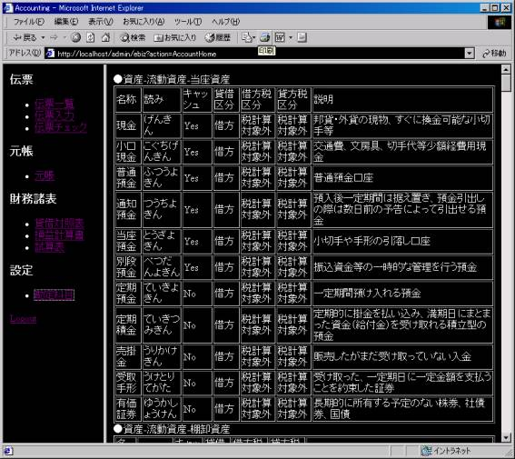
フレームの「伝票」-「伝票一覧」を選択し、
日付を入れて「表示」ボタンを押すと、
以下のようにその期間の伝票の一覧がでます。
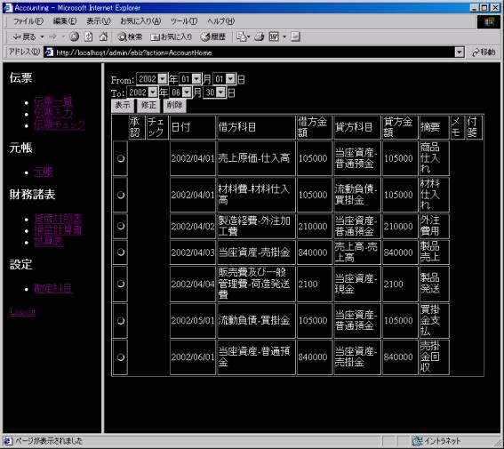
ラジオボタンを選択して「表示」ボタンを押すと、
以下のように伝票の詳細が表示されます。
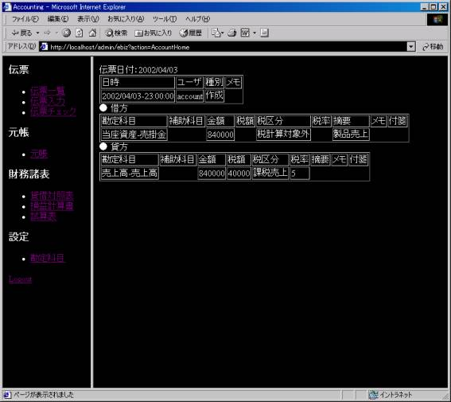
フレームの「伝票」-「伝票入力」を選択すると、
以下のような画面がでます。
伝票の種類によって借方、貸方に来る勘定科目を絞るためです。
「振替伝票」を選択するとすべての勘定科目が選択できます。
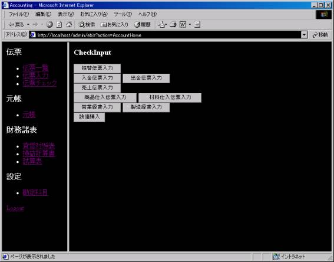
次に、勘定科目を選択します。
一般に、借方と貸方はＮ：Ｎなので、科目追加もできます。
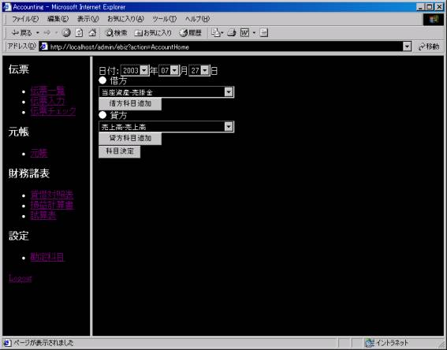
勘定科目を選択すると、補助科目や金額などを入力する画面になります。
「確定」ボタンを押して間違いがなければ伝票が入力されます。
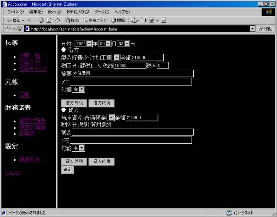
伝票に「チェック」と「承認」のマークを日付入りでつけることができます。
自分で確認するため、あるいは複数人で作業分担するために使えます。
ひとりで帳簿をつける場合は、これらは省略できます。
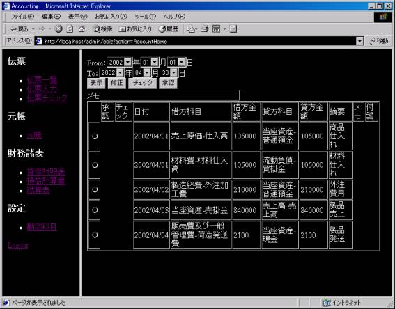
フレームの「元帳」-「元帳」を選択すると、
終了日付を入力して、ある時点のバランスシートと勘定科目を選択する画面になります。
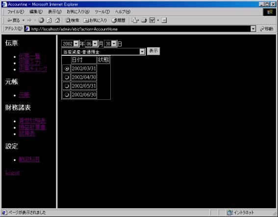
「表示」ボタンを押すと、その勘定科目に関する出入りの元帳がでます。
日単位で、相手方の勘定科目や残高が分かります。
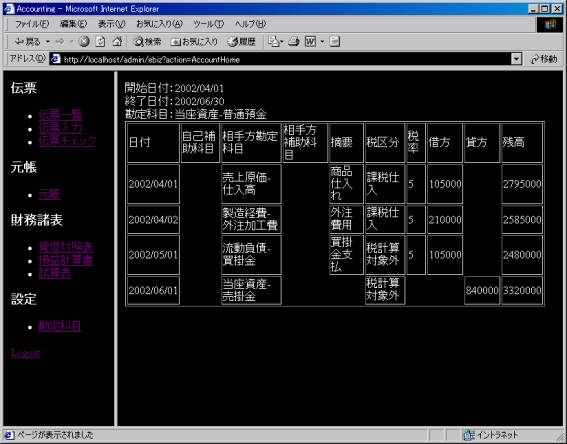
決算書のバランスシート（貸借対照表）です。自動的に集計できます。
バランスシートの日付以前の伝票を修正すると「状態」がダーティーになります。
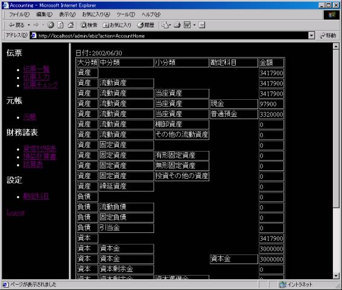
決算書の損益計算書です。自動的に集計できます。
損益計算書のの終了日付以前の伝票を修正すると「状態」がダーティーになります。
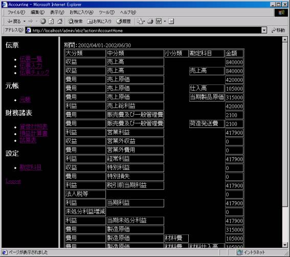
試算表です。自動的に集計できます。
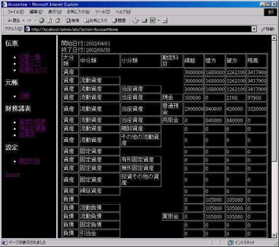
バックアップ機能は、簡易APサーバのメッセージバックアップ機能と共通です。
伝票の入力日時、BS・PLの集計日時が期間指定のバックアップの期間に
含まれるものがバックアップの対象になります。
リストアすることもできます。